Existem diferentes tipos de floresta espalhados pelo globo. Elas são vitais para a vida do ser humano, devido a muitos fatores principalmente de ordem climática. As florestas podem ser de formação natural ou artificial.
A floresta mais conhecida é a Floresta Pluvial Amazônica, maior que alguns países.
No planeta Terra existe uma grande variedade de florestas, com características diferentes segundo as condições de umidade e temperatura de cada região.
Os principais tipos são: Equatoriais, Tropicais, Boreais, Temperadas e Savanas.
Tipos de floresta
Equatoriais e Tropicais
São tipos de floresta onde predominam climas quentes (equatorial e tropical) com chuvas superiores a 2.000 mm anuais e estação seca e curta. É uma vegetação exuberante, constituída de árvores muito altas, algumas alcançando mais de 60 metros de altura.
Dividem-se em andares ou estratos, ou seja, vários níveis de vegetação. Apresentam a maior biodiversidade do planeta, com grande de espécies animais e vegetais. essas formações vegetais tem sido bastante devastadas pela ação humana, com a ação da agricultura, pecuária e mineração.
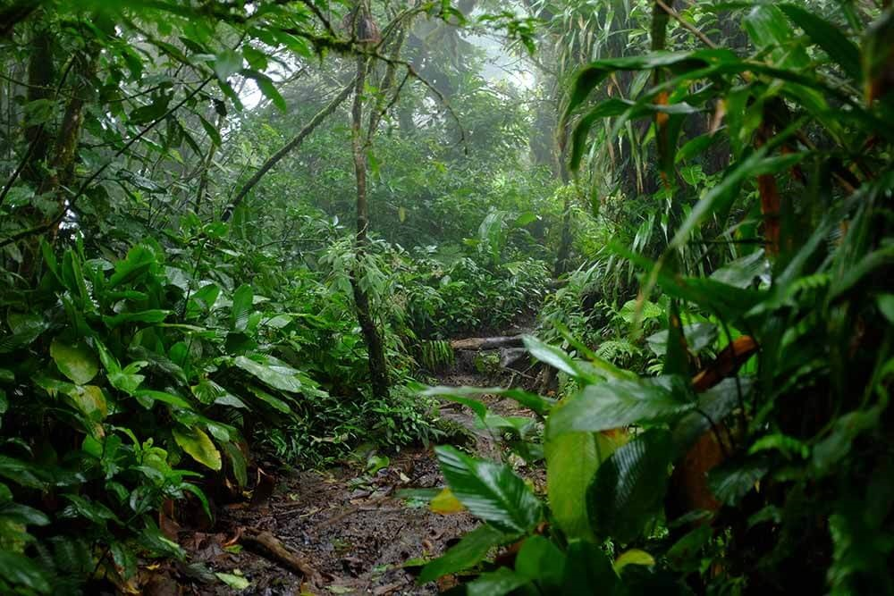
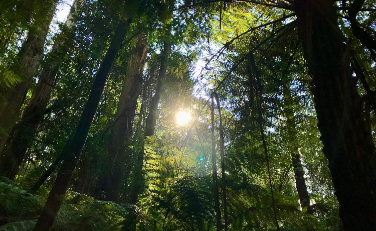
Florestas Boreais ou Taiga
Ocorrem nas extremidades das zonas temperadas setentrionais, nas latitudes acima de 50ºC até bem próximas do Círculo Polar, onde predominam os climas frios.
São tipos de floresta com formações homogêneas, constituídas de coníferas (pinheiros) adaptadas aos solos gelados do rigoroso inverno setentrional, com suas folhas, em forma de agulha, que regulam a transpiração vegetal.
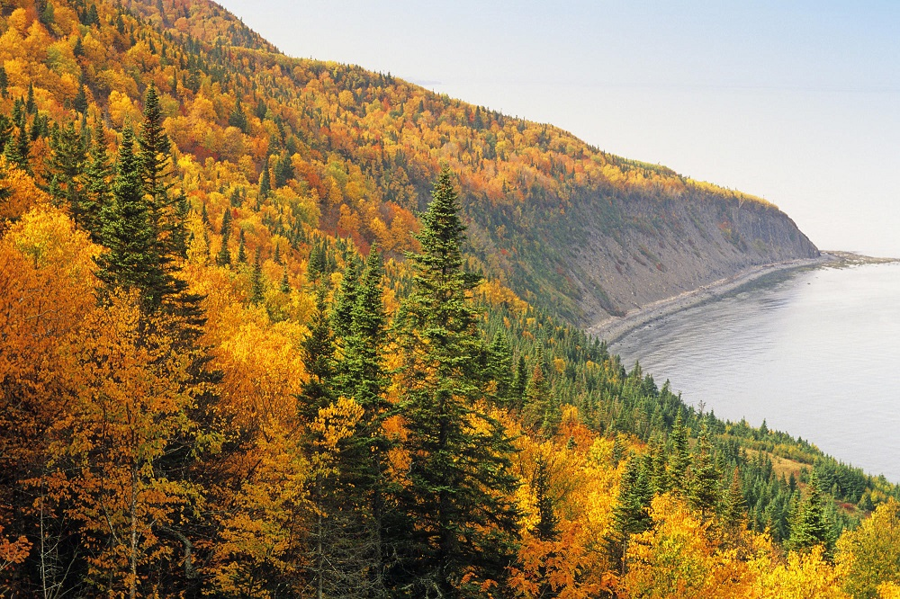
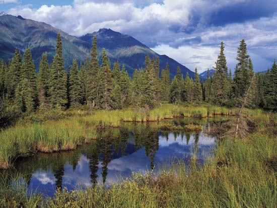
Florestas Temperadas
Localizam-se nas regiões de climas temperados, com invernos não prolongados e estações bem definidas. São chamadas de de florestas decíduas, porque no inverno, quando a temperatura chega abaixo do ponto de congelamento, em geral as folhas caem para reduzir a perda de água.
São áreas florestais praticamente em vias de desaparecimento pela destruição provocada pelo ser humano, estando quase restrita à parques e reservas.
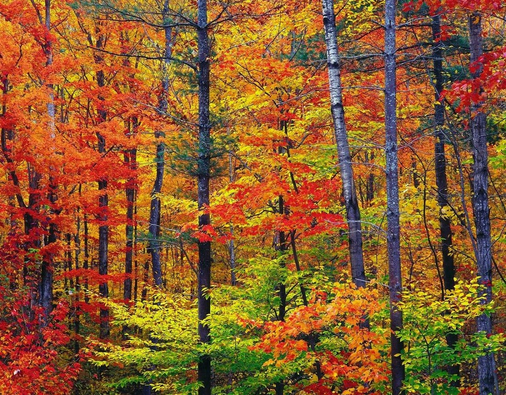
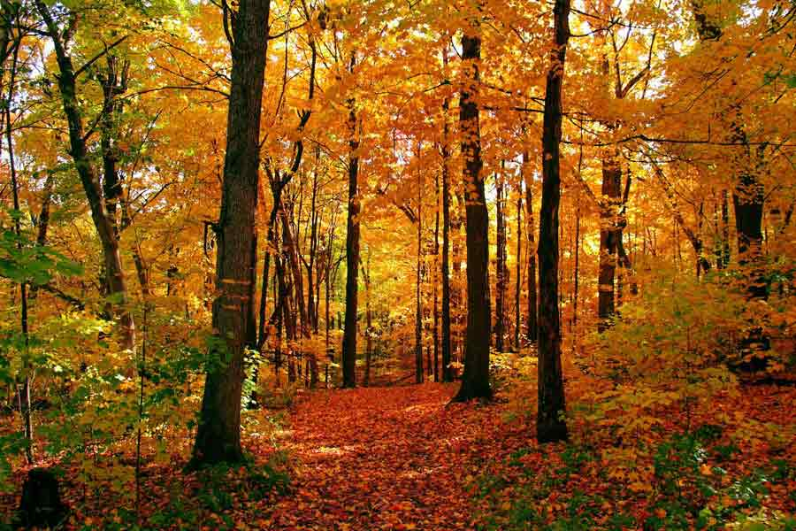
Savanas
São formações vegetais de pouca altura, não excedendo três ou quatro metros, compondo-se basicamente de arbusto e gramíneas. Ocorrem nos climas quentes, com uma estação seca bem definida.
Florescem e ficam viçosas na estação chuvosa e secas da ausência das chuvas. No Brasil, as savanas são representadas pelas caatingas; sua área de maior ocorrência no entanto, é a África.
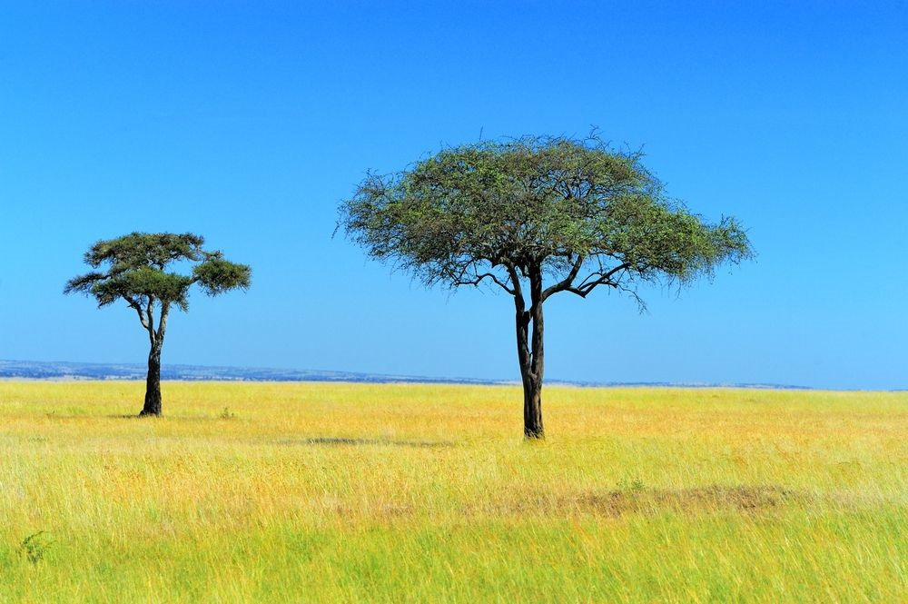
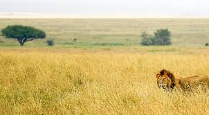
Pradarias
São domínios vegetais em que predominam espécies herbáceas e baixas, formando campos. Ocorrem nos climas temperados secos e nos subtropicais. São as pradarias norte-americanas, os pampas sul-americanos, as estepes europeias e russas.


Tundra
Vegetação que cresce nos solos gelados dos climas frios durante o curto verão. São espécies rasteiras de líquens, algas e musgos. Ocorre nas extremidades setentrionais dos continentes e nas bordas da Antártida, onde a temperatura média média do mês mais quente não ultrapassa 10ºC.
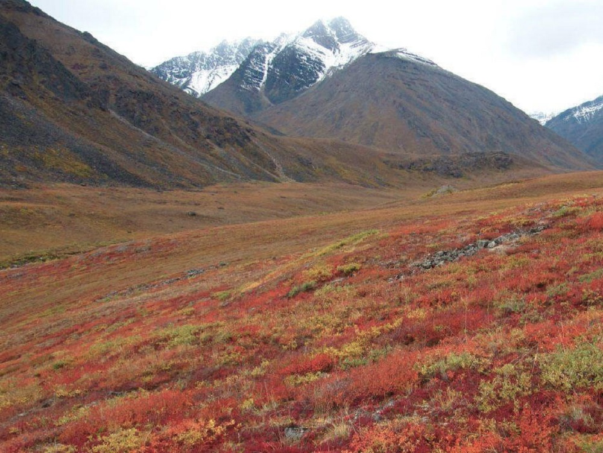
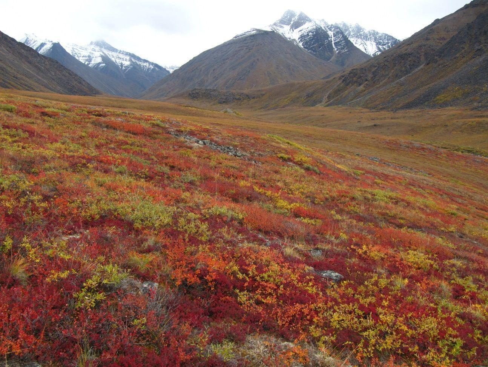
Desertos
Em razão da escassez de água, pouquíssimas espécies conseguem viver nos desertos, como as que eliminam folhas (caducifólias) ou que possuem capacidade de armazenar água (xerófitas).
Algumas plantas de pequeno porte, como o cacto, com poucas folhas ou espinhos, também se adaptam ao ambiente. Nos oásis, pela presença de água, crescem algumas palmeiras como a tamareira.
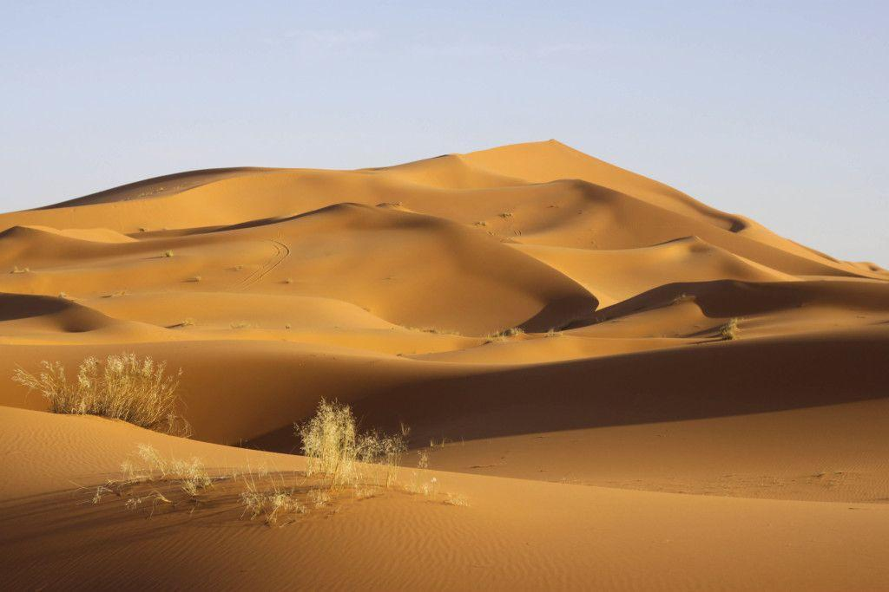
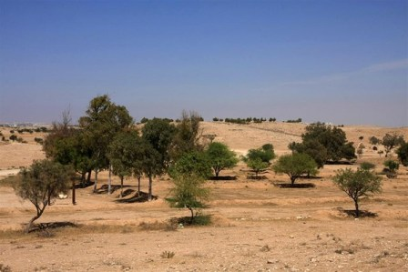